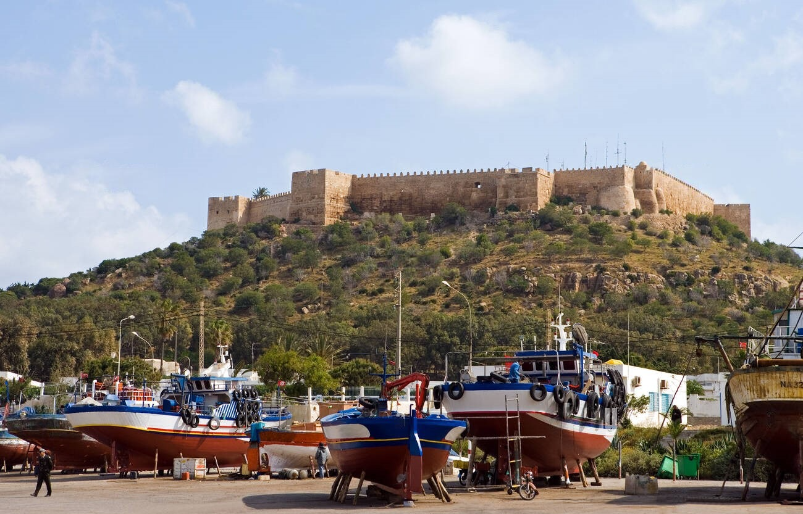

Welcome to Hammamet!
Hammamet, often dubbed as the "Tunisian Saint-Tropez," attracts visitors from around the world with its picturesque landscapes, warm climate, and welcoming atmosphere. Located in the northeastern part of Tunisia, it offers a perfect blend of relaxation, adventure, and cultural exploration.
Beaches:
Hammamet is famed for its pristine beaches adorned with golden sands and crystal-clear waters. Visitors can bask in the sun, indulge in various water sports activities, or simply take leisurely strolls along the coast. Some popular beaches include:
- Hammamet Beach: The main beach, located in the heart of the town, offers a wide stretch of sand lined with restaurants, cafes, and water sport facilities.
- Yasmine Hammamet Beach: Situated in the modern resort area of Yasmine Hammamet, this beach is known for its lively atmosphere, water parks, and luxury hotels.

Highest Quality Hotels:
Hammamet boasts a wide range of accommodation options, including luxurious resorts, boutique hotels, and budget-friendly guesthouses. Some of the highest quality hotels in Hammamet include:
- Residence Tunis: A five-star luxury resort located in Gammarth, offering elegant rooms, gourmet dining, and a world-class spa overlooking the Mediterranean Sea.
- La Badira: Situated in Hammamet's Yasmine district, this award-winning hotel features contemporary design, panoramic sea views, and top-notch amenities, including multiple swimming pools and a private beach.
- Royal Azur Thalasso Golf: Nestled amidst lush gardens and overlooking the Gulf of Hammamet, this upscale resort offers spacious rooms, a championship golf course, and a rejuvenating thalassotherapy spa.

Marine Activities:
Adventure seekers visiting Hammamet will discover a plethora of thrilling marine activities awaiting them.
- Snorkeling: Immerse yourself in the mesmerizing world beneath the waves, where vibrant coral reefs and an array of marine life await exploration.
- Scuba Diving: Dive into the depths and uncover hidden treasures as you navigate through underwater caves and encounter fascinating sea creatures.
- Jet Skiing: Feel the exhilarating rush as you zip across the glistening waters, with the wind in your hair and adrenaline coursing through your veins.
- Parasailing: Soar high above the crystal-clear sea, suspended by a parachute, and marvel at the breathtaking views of the coastline from a unique vantage point.
- Excursions to Nearby Islands: Embark on guided adventures to picturesque islands like the Kerkennah Islands, where you can delve into the wonders of marine life and immerse yourself in the stunning underwater landscapes.
Nightlife:
Hammamet comes alive after dark with its vibrant nightlife scene. Visitors can experience traditional Tunisian music and dance performances, enjoy live entertainment at beachfront bars and clubs, or unwind in cozy cafes with shisha and local delicacies. The Medina area offers a unique atmosphere with its bustling markets, street vendors, and lively street performers.

Tourist Attractions near Hammamet

Tunis: Discover the vibrant capital city of Tunisia, Tunis, which offers a blend of modern amenities and rich cultural heritage. Explore its medina, museums, and historic landmarks. Tunis is approximately a 1 hour drive away from Hammamet.
Kelibia Fortress: Journey to Kelibia and explore its ancient fortress overlooking the sea. The Kelibia Fortress offers panoramic views and a glimpse into Tunisia's past. It's about a 1 hour drive away from Hammamet.

Explore the ancient ruins of Carthage, a UNESCO World Heritage Site known for its historical significance and archaeological remains dating back to the Phoenician era:
- Historical Significance: Unravel the rich tapestry of Carthage's past, tracing its origins to the Phoenician era and its subsequent evolution through various civilizations.
- Archaeological Marvels: Embark on a journey through time as you explore the well-preserved archaeological remains scattered across the Carthaginian landscape.
- Punic Heritage: Delve into the legacy of the Punic Wars and the enduring influence of Carthage on Mediterranean geopolitics and culture.
- Majestic Ruins: Marvel at the grandeur of ancient structures such as the Antonine Baths, the Punic Ports, and the iconic Byrsa Hill, each echoing tales of bygone eras.
Location: Situated just a scenic 1 hour drive away from Hammamet, Carthage beckons travelers with its proximity and promise of unparalleled historical exploration.
Sidi Bou Said, is a picturesque town renowned for its captivating blue and white buildings, labyrinthine streets, and panoramic vistas of the azure Mediterranean Sea. Located just a scenic 1-hour drive from Hammamet, this charming destination promises an unforgettable experience:
- Architectural Splendor: Wander through the quaint cobblestone streets adorned with whitewashed buildings adorned with vibrant blue accents, reminiscent of a Mediterranean dream.
- Cultural Heritage: Immerse yourself in the rich cultural tapestry of Sidi Bou Said, where art galleries, artisan shops, and traditional cafes offer glimpses into Tunisia's artistic and culinary traditions.
- Gardens and Parks: Stroll through lush gardens and verdant parks, such as the Ennejma Ezzahra Palace gardens, where fragrant blooms and tranquil fountains create an oasis of serenity amidst the bustling streets.
Additional Information:
| Population: | 106,326 (2023) |
|---|---|
| Area: | 36 km² ≈ 14 miles² |
| Common Languages: | Arabic, French, English (Tour guides speak much more languages) |
| Means of transportation: | Car rentals, taxis, buses |
| Official Currency: | Tunisian Dinar (You can change money anywhere) |
| Time Zone: | Central European Time (GMT+1) |